Keyword research
& strategy
Seed keyword discovery, SERP and competitor analysis, Ahrefs research, query fan-out, clustering and keyword-to-page mapping.
Research · Mapping · PrioritizationI help B2B SaaS brands get found in Google and recommended in AI answers—from research to writing, publishing, and ongoing optimization.
ABOUT ME
I'm Elena, a content writer with 3+ years of experience, currently specializing in SEO/GEO content writing. I have hands-on experience with keyword research, search intent analysis, internal linking, content reoptimization, and creating content that delivers value to both users and AI systems.
I understand that the content needs to be structured around what people search for, why they search for it, and what helps them make a decision.
I want to learn, grow, and build my career in SEO/GEO to help brands earn rankings, clicks, and AI citations they can measure.
WHAT I DO
A connected process designed to support the full buying journey, not just traffic.
Seed keyword discovery, SERP and competitor analysis, Ahrefs research, query fan-out, clustering and keyword-to-page mapping.
Research · Mapping · PrioritizationContent planning across TOFU, MOFU and BOFU, informed by SERPs, People Also Ask, Reddit and community questions.
Topic clusters · Content calendarsAudits, contextual anchor mapping, pillar and cluster structures, and funnel-aware links implemented in WordPress or documented for implementation.
Audits · Link maps · ImplementationReader-first content aligned with search intent, with clear answers, useful comparisons, contextual links and FAQs. Existing content is refreshed based on evidence.
Writing · Refreshes · OptimizationArticles written for search intent and AI visibility. Open an article to read it, or jump to its Search Console results.
GEO · TOFU
A plain-English guide for SaaS marketers on making pages easy for AI engines to read and cite.
AEO · MOFU
Step-by-step framework for earning answers in AI Overviews, with examples and a checklist.
INTERNAL LINKING · MOFU
How pillar and cluster links help AI search engines map your topics and cite your pages.
Google Search Console results from blog posts I wrote and tracked. Use the arrows to browse, and click an image to open it full size.
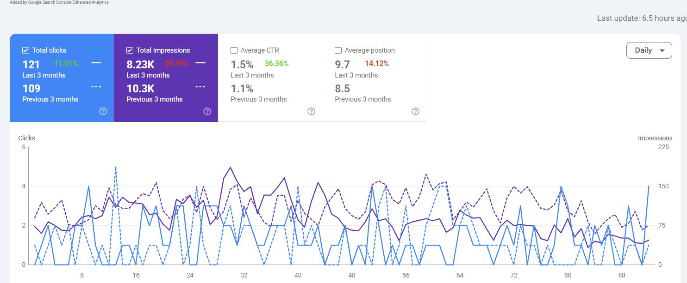
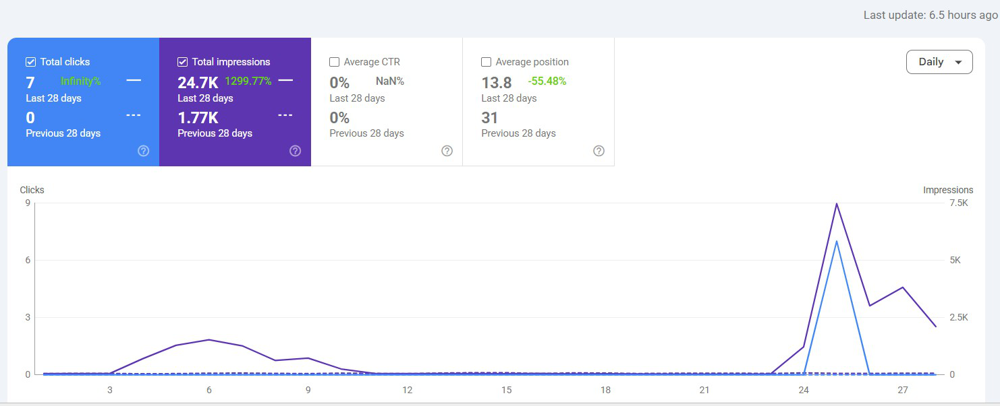
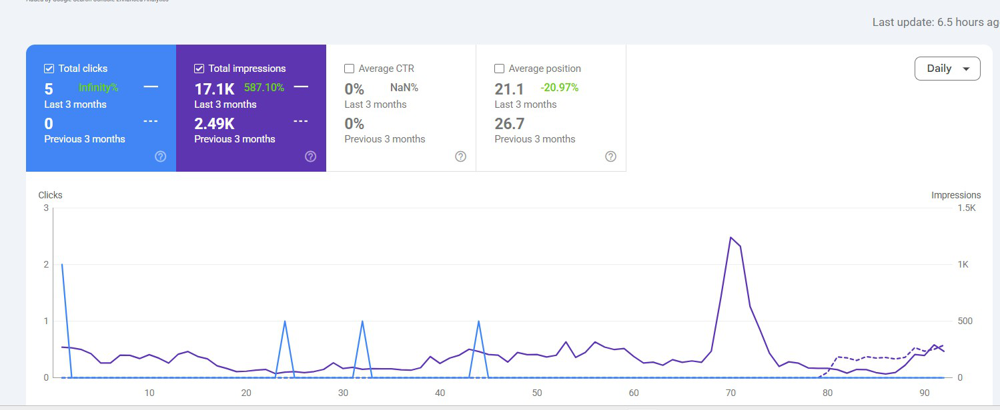
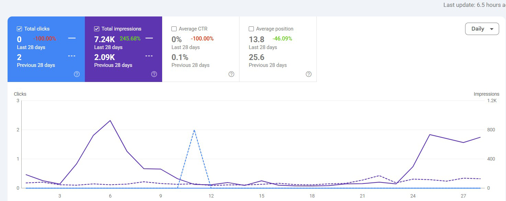
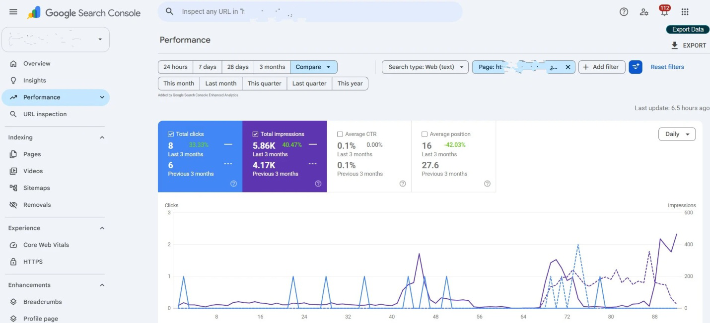
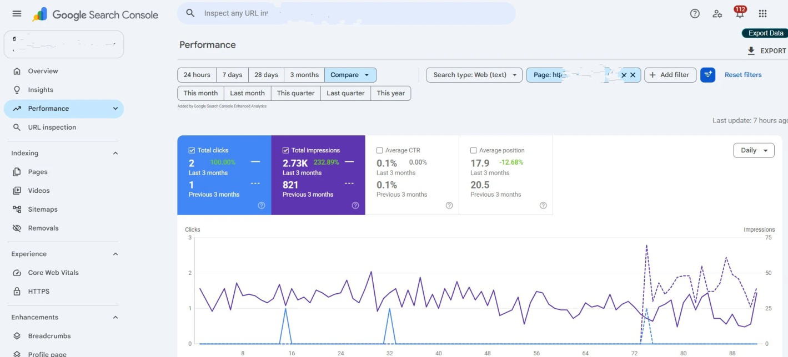
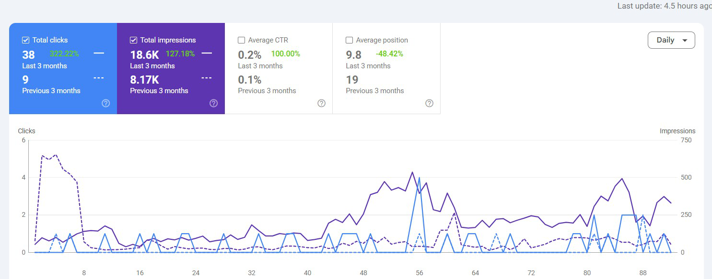
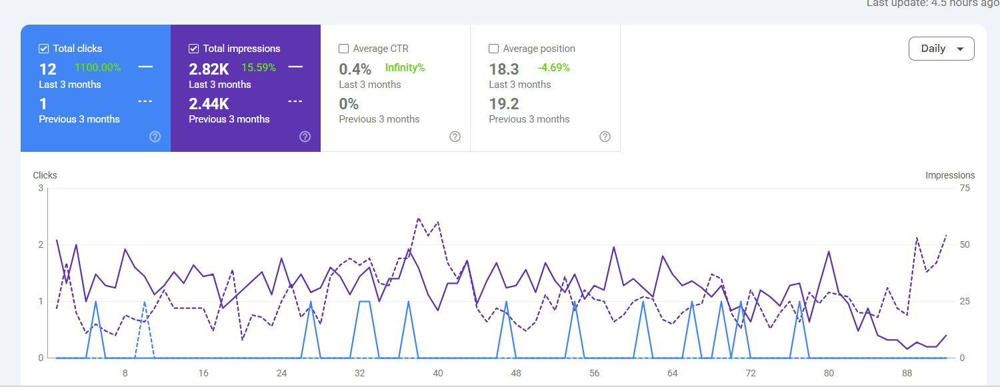
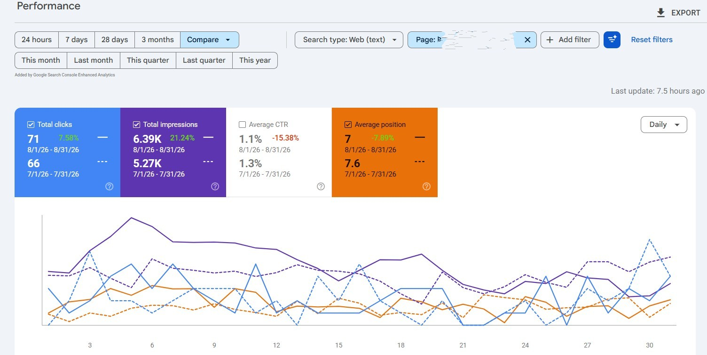
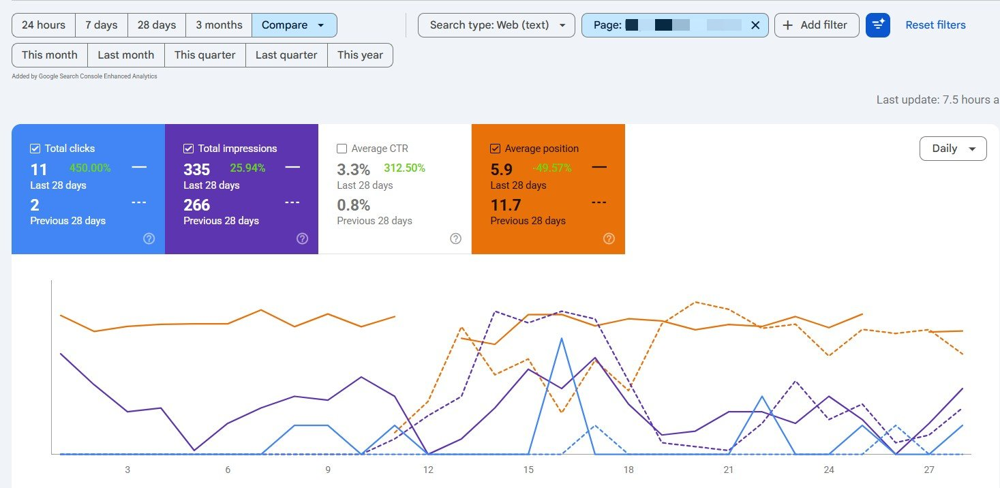
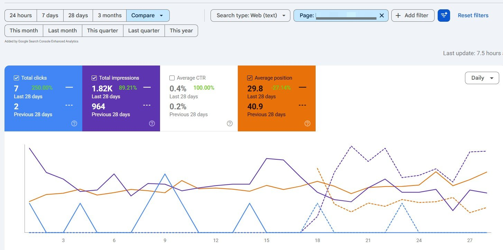
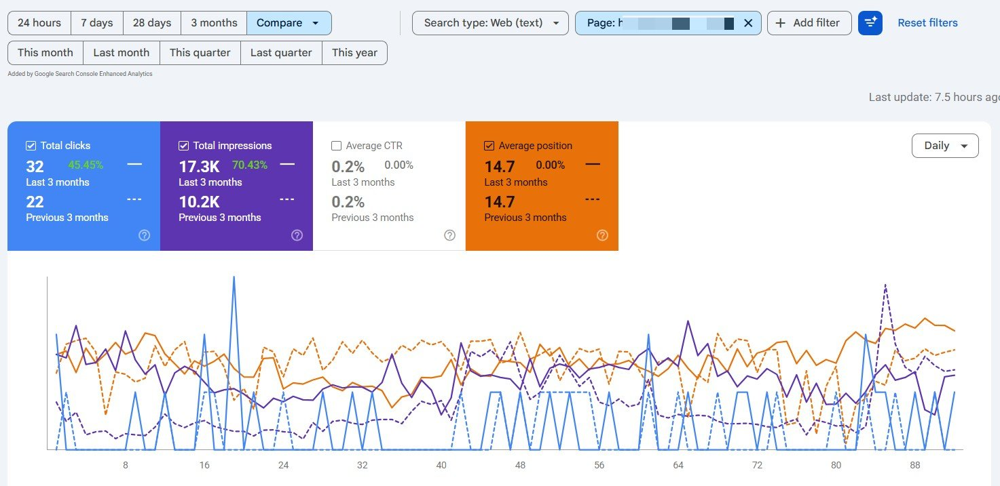
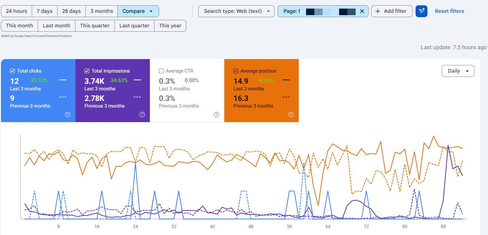
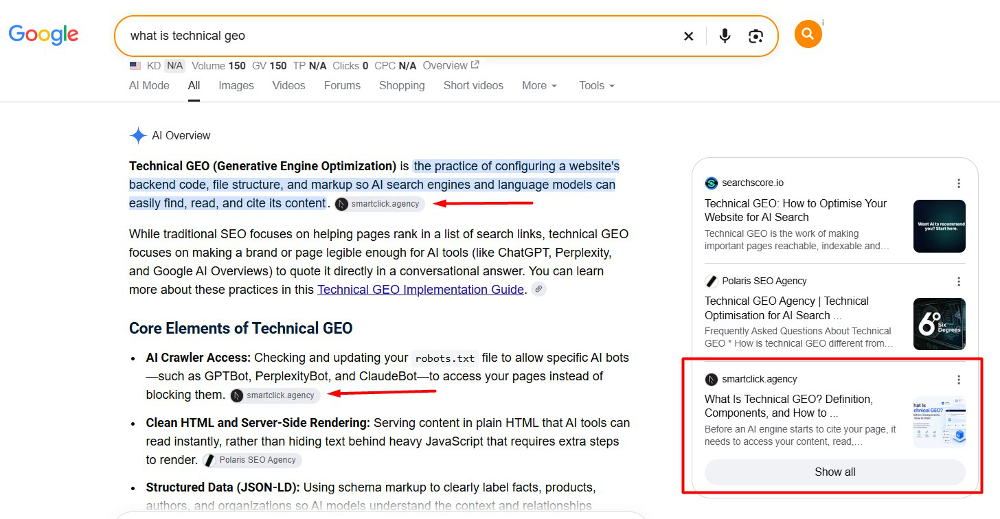
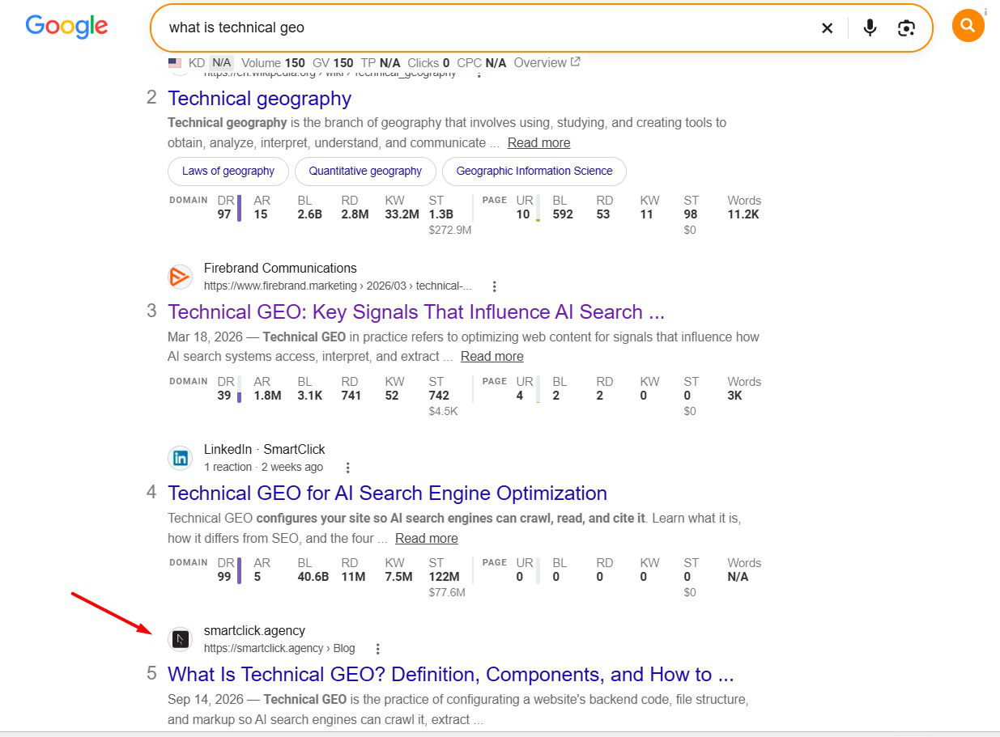
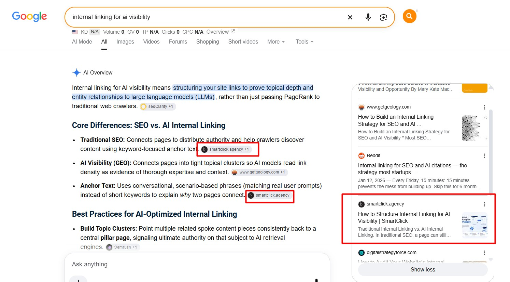
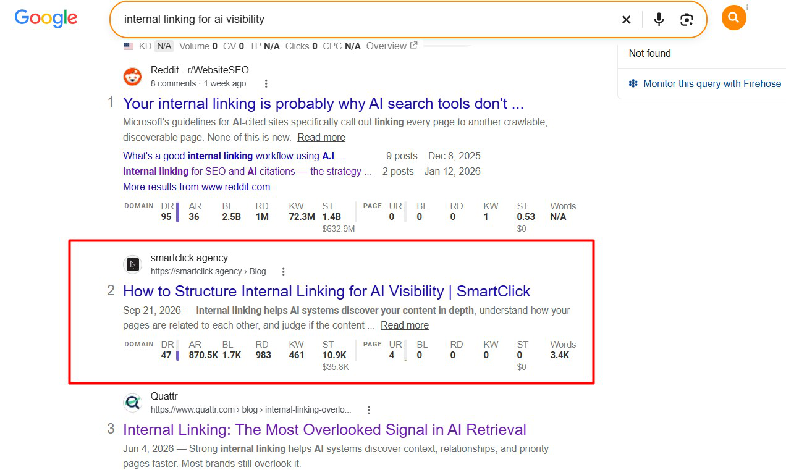

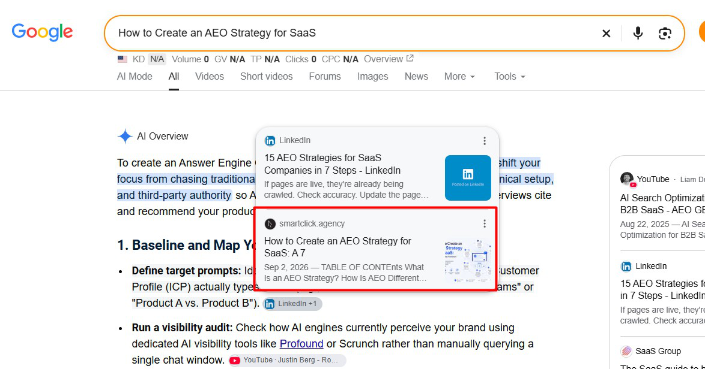
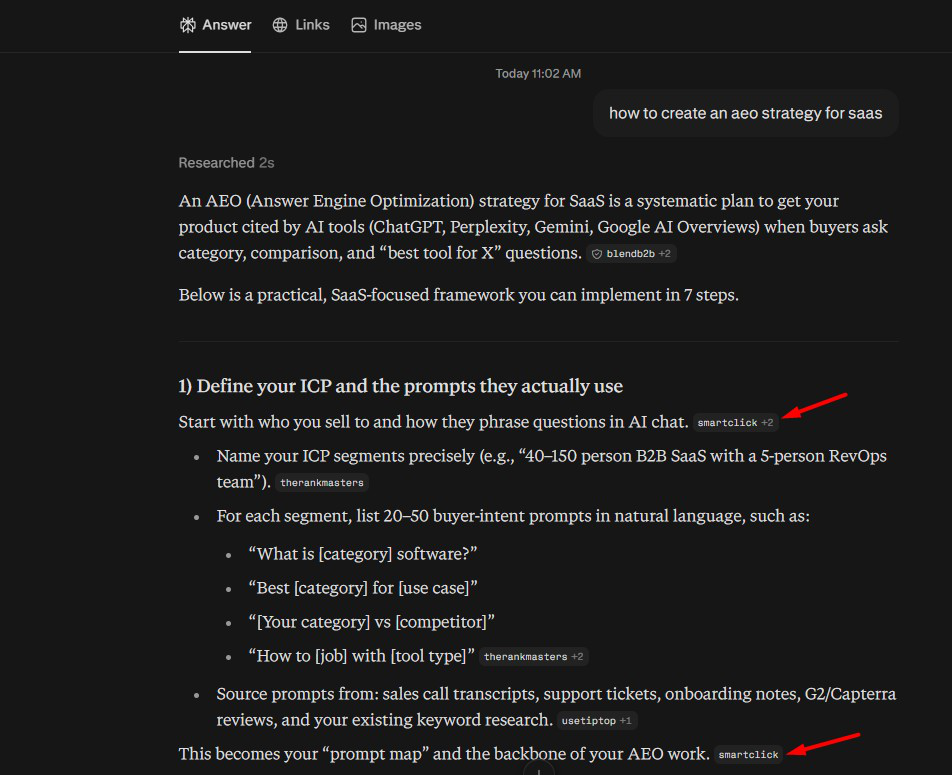
Three separate pages, refreshed using Google Search Console data. Each comparison uses equal-length periods before and after the update.
Two pages tested on long-tail queries for LLM optimization
REOPTIMIZATION 01 · VIRTUAL TRY-ON
+782.9% impressions · clicks 0 → 3
21 Jul–3 Aug vs. 8–21 Aug 2026 (14-day periods). Based on long-tail queries from Search Console, to test whether the page ranks better in LLMs.
REOPTIMIZATION 02 · OPTOMETRY PRACTICE KPIS
+26.7% impressions · +37.5% clicks · position 8.4 → 7.9
3–16 Aug vs. 22 Aug–4 Sep 2026 (14-day periods). Based on long-tail queries from Search Console.
Traditional reoptimization with Search Console screenshots
REOPTIMIZATION 03 · HOW TO RECOVER SEO RANKINGS DROPS IN 2026
+188.9% clicks · +80.8% impressions
Last 3 months vs. previous 3 months. A traditional reoptimization to better match search intent, based on SERP and competitor analysis. The screenshots show this page.
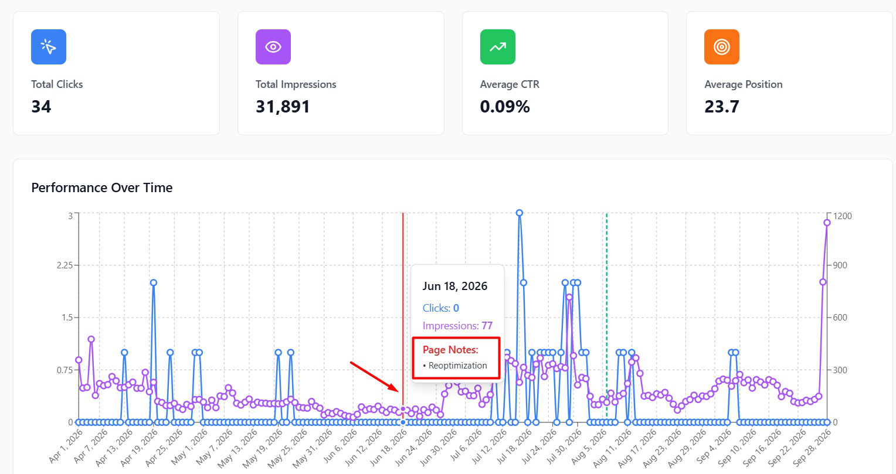
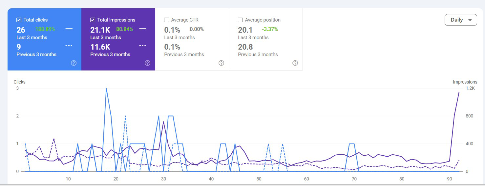
Figures come from Google Search Console. They are page-level comparisons and do not establish that any single change caused the full difference.
Elena is a dedicated and hard working individual who always welcomes constructive feedback and is eager to learn and improve. Her growth in the past two years was really amazing to witness, and I highly recommend her for any roles in the realm of Content and SEO.